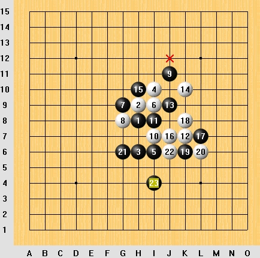

[原创]白能胜么？
首页
五子棋交流
#1 [原创]白能胜么？ 作者：飞翔 发表时间：2006-4-24 22:31:09
黑23之后，白如何走！！

#2 Re:[原创]白能胜么？ 作者：kaka 发表时间：2006-4-25 13:22:57
J8,M11
K7,K5
L6,M5
M6,J6
N6,O6
L8,M7
N8,抓M8四四
#3 Re:[原创]白能胜么？ 作者：杨华明 发表时间：2006-4-26 8:33:29
看看
#4 Re:[原创]白能胜么？ 作者：赵家熹 发表时间：2006-4-27 16:50:09
<IMG src="http://c:/Documents" Settings\Administrator\ and><IMG src="http://c:/Documents" Settings\Administrator\ and>
#5 Re:[原创]白能胜么？ 作者：天涯游子 发表时间：2006-5-17 10:44:38
黑23为什么要下那里呢,这棋应该是下错了啊
#6 Re:[原创]白能胜么？ 作者：天涯游子 发表时间：2006-5-17 11:09:52
白棋连续VCF
白 黑
K9 K11
J8 M5
L10 M11
M10 J10
N10 O10
J5 J4
N11 L9
L8 M9
N8 M8
白棋冲四活三成功
#7 Re:[原创]白能胜么？ 作者：光辉 发表时间：2006-6-4 19:35:35
Ｊ８，Ｋ９，Ｌ１０，Ｍ１０，Ｎ１０，Ｌ８，Ｎ８抓Ｍ８的４４